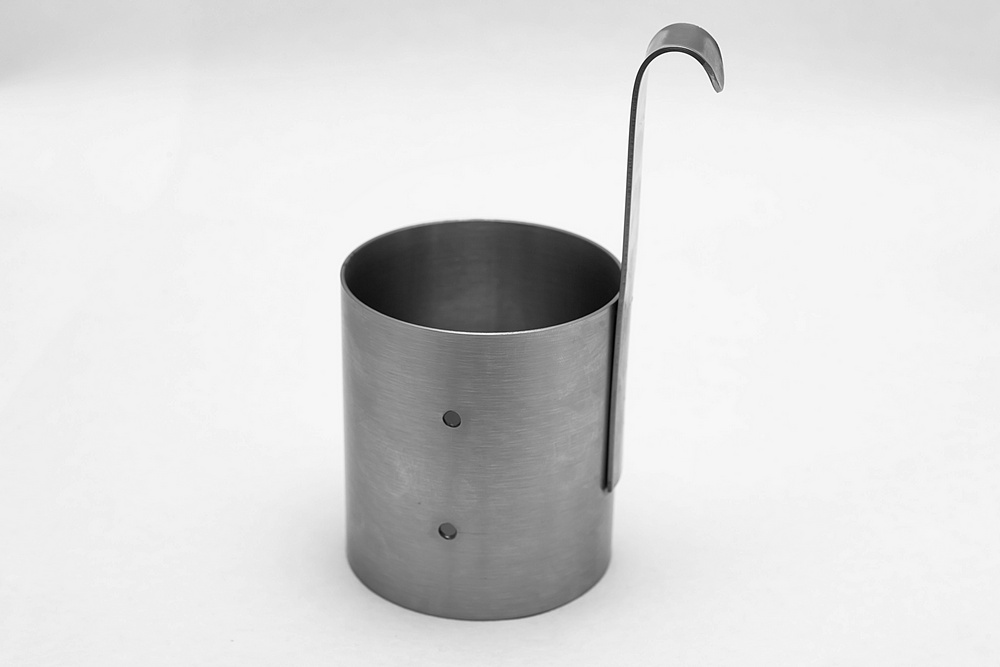

Стандартная кружка ВМС
Кружка стандартная ВМС применяется для определения условной вязкости
дисперсии поливинилацетатной гомополимерной грубодисперсной по ГОСТ
18992-80.
Представляет собой цилиндрический сосуд с ручкой, изготовленный из
нержавеющей стали.
Принцип действия основан на определении времени истечения определенного
объема испытуемой жидкости через отверстия цилиндра.

Технические характеристики ПН-10
- Внутренний диаметр кружки, мм 69,8±0,2
- Высота кружки (цилиндра), мм 80,0
- Диаметр нижнего выходного отверстия, мм 9,5+0,2
- Диаметр боковых отверстий, мм 4,2
- Габариты, мм 145,0 х 92,0 х 72,0
- Масса, не более, кг 0,25
- Материал основных деталей
- Корпус Сталь AISI 304
- Ручка Сталь AISI 304
Комплектация
- Кружка стандартная ВМС 1 шт
- Паспорт 1
- Упаковка 1
- Паспорт 1 шт